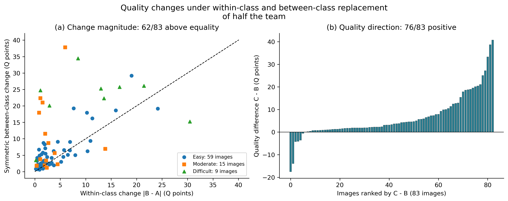
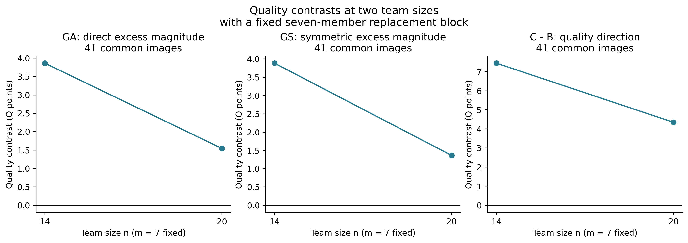
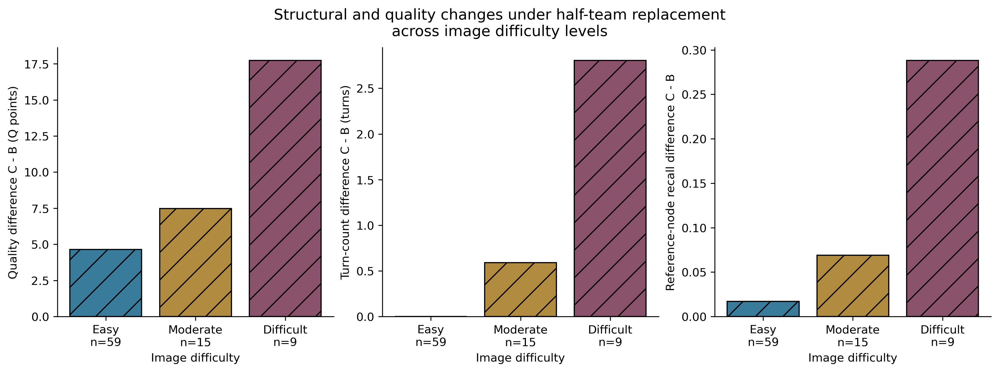
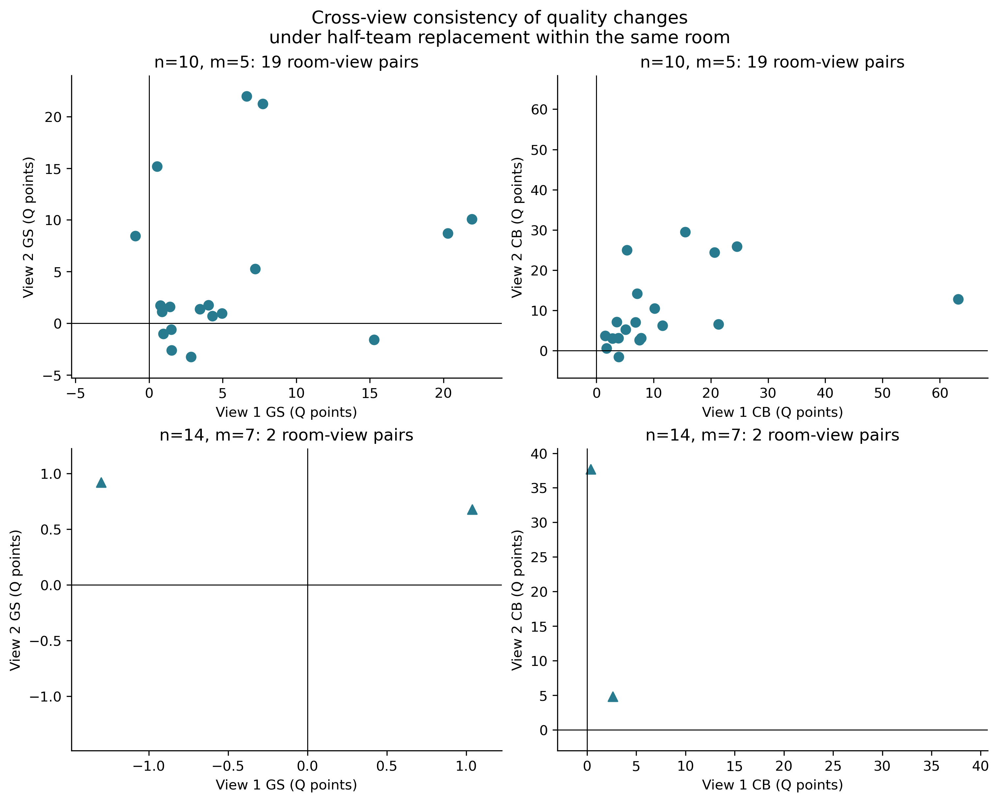
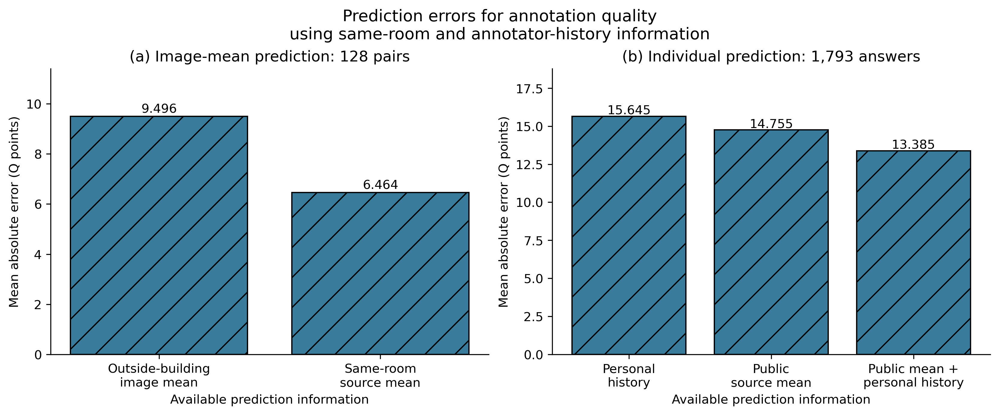
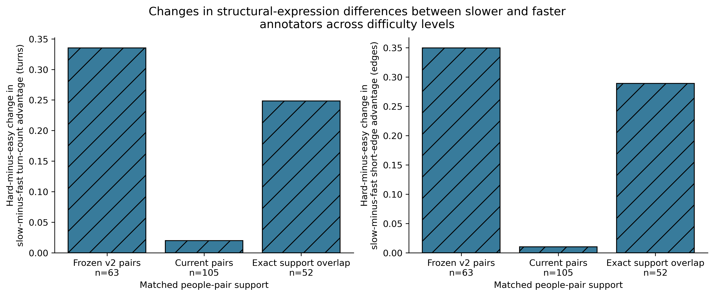
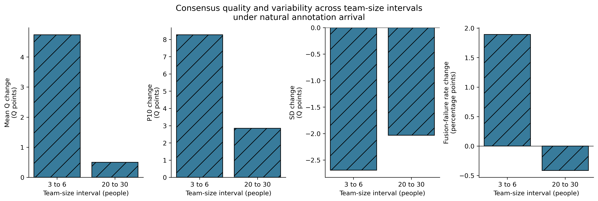
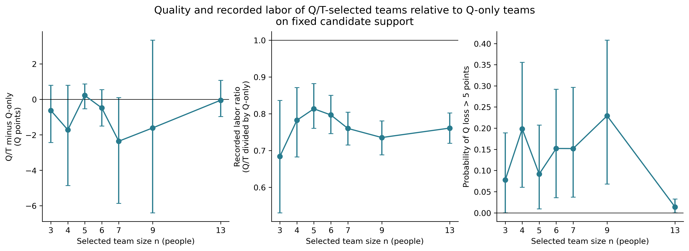

v2.1 publication figures
Updated image-difficulty analysis: affected working-label results below retain their frozen identity. See updated figures and support. Classification remains provisional.
F01_half_team: Quality changes under within-class and between-class replacement of half the team

Ordinary Manual, TARGET_DSTRUCT K3 working labels, n=14 and m=7. A is the original team, B the within-class replacement, and C the between-class replacement. Symmetric magnitude=(|C-A|+|C-B|)/2. Saved background, block, pool and image aggregation is retained. GA/GS use 185 jointly scoreable ABC events; C-B uses 187 BC events, both covering 83 of 85 registered images. Missing scores are excluded, never replaced by zero.
PDF · SVG · Data
F02_background: Quality contrasts at two team sizes with a fixed seven-member replacement block

TARGET K3 working labels. Exact X/Y/Z blocks are fixed and the 14-person background is nested in the 20-person background. Saved paired-context weights are used. There are 56 registered links across 45 images; metric-specific valid support is shown. Team size, background, voting threshold and replacement fraction change together.
PDF · SVG · Data
F03_difficulty: Structural and quality changes under half-team replacement across image difficulty levels

TARGET K3, 14/7. Bars are image-equal means from saved metric-specific summaries, not confidence intervals. Among nine scoreable difficult images, turns increase in 9/9 and Q in 7/9; structural retention and quality are distinct outcomes. Reference-node recall uses the source 5-degree matching definition.
PDF · SVG · Data
F04_same_room_replacement: Cross-view consistency of quality changes under half-team replacement within the same room

Ordinary comparable Manual, TARGET K3 working direction 2 to 3. Each point is a physical pair of room views. GS denotes symmetric excess between-class magnitude; CB denotes C-B. The 10/5 subset has 268 physical events, 237 with all six endpoints scoreable, across 19 pairs and 7 buildings. The 14/7 subset has 10 events, 6 jointly scoreable, only 2 pairs and one fixed incoming seven-person block.
PDF · SVG · Data
F05_same_room_prediction: Prediction errors for annotation quality using same-room and annotator-history information

Current ordinary no-relation-pending scope: 65 images and 13 buildings. Image predictions use 128 direct pairs; individual predictions use the same 1,793 target answers (5,198 prediction rows). Panels have different prediction targets and should not be ranked against each other. Source-level image weighting is retained.
PDF · SVG · Data
F06_speed_difficulty: Changes in structural-expression differences between slower and faster annotators across difficulty levels

Bars use the saved same-people-pair means of (slow-fast on difficult images) minus (slow-fast on easy images). Frozen v2 pairs are rescored on v2.1; current TARGET K3 and the exact old/current support overlap are separate designs. Matching uses outside-building history, not target-image Q. The overlap is not a replacement for the full current support.
PDF · SVG · Data
F07_natural_size: Consensus quality and variability across team-size intervals under natural annotation arrival

Fixed 171 ordinary Manual images with at least 30 eligible annotators. Each bar is an image-equal change in a per-image statistic under natural random orderings. Mean, P10 and SD are conditional on scoreability; actual fusion failures are separately measured. These are interval contrasts, not a complete arrival curve or an optimized-team experiment.
PDF · SVG · Data
F08_qt_selection: Quality and recorded labor of Q/T-selected teams relative to Q-only teams on fixed candidate support

126 common source-target contexts, 46 images, 9 buildings, fixed across n=3,4,5,6,7,9,13. Points and 95% empirical building-resampling intervals are copied from the accepted saved summaries (20,000 replicates), Contexts are equally weighted within target images, then images within buildings, then buildings. Labor ratios are aggregated on the log scale and exponentiated; they are not ratios of summed labor. Metric-specific scoreability is retained. At n=5, delta Q=0.218 and labor ratio=0.813. Q/T teams can be non-nested across sizes. This is not natural arrival.
PDF · SVG · Data
S01_case_S9hNv5qa7GM-09: Consensus geometry under half-team replacement for S9hNv5qa7GM-09 using TARGET K3 working labels

One saved 14/7 anchor event (45233d89fc52d766715361de). A: original team; B: within-class replacement; C: between-class replacement. Coordinates are normalized by camera height. Missing rings are represented only by selected nodes; connecting edges are never invented. This is an explanatory case, not an independent effect estimate. Image-level effects use all saved events, not only this anchor.
PDF · SVG · Data
S02_case_jh4fc5c5qoQ-04: Consensus geometry under half-team replacement for jh4fc5c5qoQ-04 using TARGET K3 working labels

One saved 14/7 anchor event (857d2f8c54deec0c2bcecf31). A: original team; B: within-class replacement; C: between-class replacement. Coordinates are normalized by camera height. Missing rings are represented only by selected nodes; connecting edges are never invented. This is an explanatory case, not an independent effect estimate. Image-level effects use all saved events, not only this anchor.
PDF · SVG · Data
S03_case_B6ByNegPMKs-11: Consensus geometry under half-team replacement for B6ByNegPMKs-11 using TARGET K3 working labels

One saved 14/7 anchor event (75194bdb49129a896d3af8f0). A: original team; B: within-class replacement; C: between-class replacement. Coordinates are normalized by camera height. Missing rings are represented only by selected nodes; connecting edges are never invented. This is an explanatory case, not an independent effect estimate. Image-level effects use all saved events, not only this anchor.
PDF · SVG · Data
S04_case_VFuaQ6m2Qom-04: Consensus geometry under half-team replacement for VFuaQ6m2Qom-04 using TARGET K3 working labels

One saved 14/7 anchor event (0f168d05dd6a0ba41a9c1346). A: original team; B: within-class replacement; C: between-class replacement. Coordinates are normalized by camera height. Missing rings are represented only by selected nodes; connecting edges are never invented. This is an explanatory case, not an independent effect estimate. Image-level effects use all saved events, not only this anchor.
PDF · SVG · Data
S05_case_pa4otMbVnkk-42: Consensus geometry under half-team replacement for pa4otMbVnkk-42 using TARGET K3 working labels

One saved 14/7 anchor event (3a4a3cc58caafa1f926bb5c8). A: original team; B: within-class replacement; C: between-class replacement. Coordinates are normalized by camera height. Missing rings are represented only by selected nodes; connecting edges are never invented. This is an explanatory case, not an independent effect estimate. Image-level effects use all saved events, not only this anchor.
PDF · SVG · Data
S06_case_S9hNv5qa7GM-12: Consensus geometry under half-team replacement for S9hNv5qa7GM-12 using TARGET K3 working labels

One saved 14/7 anchor event (3541b27a4eff744938462e2b). A: original team; B: within-class replacement; C: between-class replacement. Coordinates are normalized by camera height. Missing rings are represented only by selected nodes; connecting edges are never invented. This is an explanatory case, not an independent effect estimate. Image-level effects use all saved events, not only this anchor.
PDF · SVG · Data